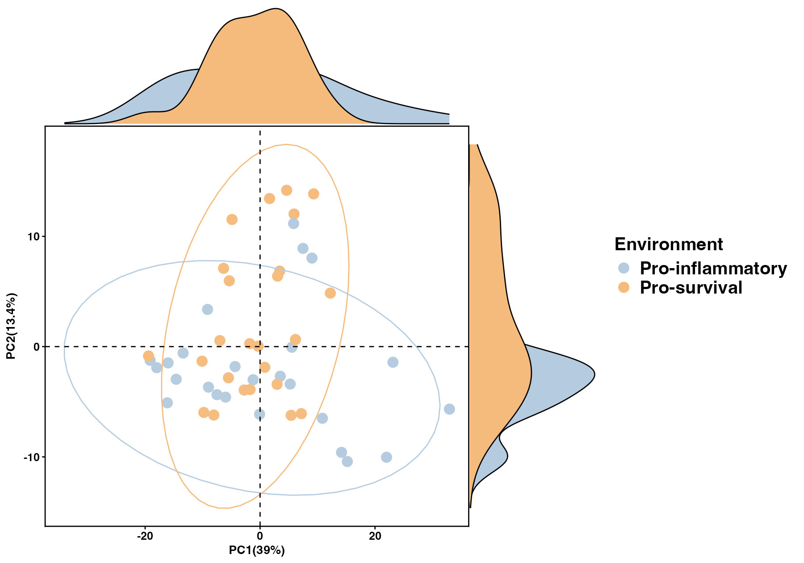
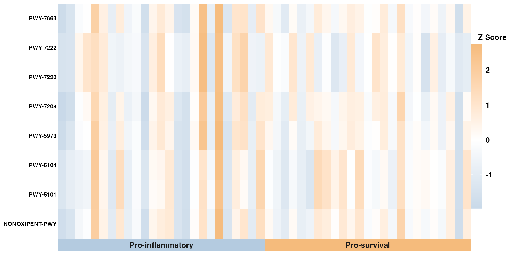
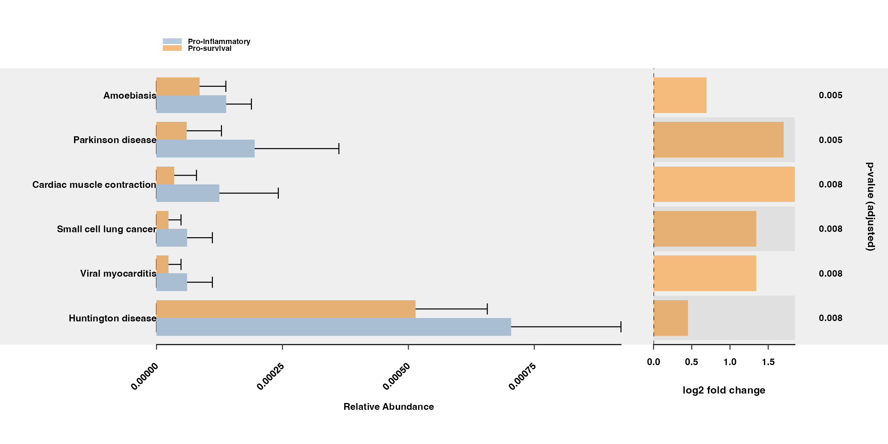

Community-level visualizations
sample-level-plots.RmdBefore focusing on individual contributors, look at how the functional profiles behave across samples. Do the groups show a broad pattern? Are a few samples unusual? Which pathways vary together?
We use PCA, heatmaps and abundance summaries to examine different parts of that question. Each section below pairs runnable code with its output and an explanation of what the figure shows.
These three plotting examples use bundled data and already annotated results. After software installation, they do not need to contact KEGG or use an API key. Preparing new KEGG annotations for your own study is a separate step described in mapping and network access.
Load the bundled example data
The package supplies metadata for 50 samples, split equally between the Pro-inflammatory and Pro-survival groups. We use the bundled MetaCyc abundance table for PCA and the heatmap, then the KEGG abundance table and its supplied annotated LinDA results for the error-bar plot. These examples are separate from the STS/LTS study figures in the stratified demonstration.
library(MicroFun)
data("metadata", package = "MicroFun")
data("metacyc_abundance", package = "MicroFun")
meta_demo <- data.frame(
sample_name = metadata$sample_name,
Environment = factor(
metadata$Environment,
levels = c("Pro-inflammatory", "Pro-survival")
)
)
abundance <- as.data.frame(metacyc_abundance, check.names = FALSE)
rownames(abundance) <- abundance$pathway
abundance$pathway <- NULL
sample_index <- match(colnames(abundance), meta_demo$sample_name)
stopifnot(!anyNA(sample_index), !anyDuplicated(meta_demo$sample_name))
meta_demo <- meta_demo[sample_index, , drop = FALSE]
pathway_variance <- apply(abundance, 1, stats::var)
keep <- is.finite(pathway_variance) & pathway_variance > 0
abundance <- abundance[keep, , drop = FALSE]
table(meta_demo$Environment)
dim(abundance)
out <- "MicroFun_community_figures"
dir.create(out, recursive = TRUE, showWarnings = FALSE)The prepared matrix contains 316 nonconstant MetaCyc pathways across the 50 samples. Samples are matched by identifier, and constant pathways are excluded because scaled PCA cannot use a feature with zero variance.
PCA summarizes the overall profiles
p_pca <- pathway_pca(
abundance, meta_demo, group = "Environment"
)
p_pca
ggplot2::ggsave(
file.path(out, "community_pca.png"), p_pca,
width = 10, height = 7, dpi = 180, bg = "white"
)
PC1 explains 39.0% of the variation and PC2 explains 13.4%, together accounting for 52.4%. Each point is a sample; nearby points have more similar profiles in this projection. The marginal density plots show the distribution of each group along the two components.
The groups overlap substantially. Pro-inflammatory samples span a wider range along PC1, while several Pro-survival samples extend toward higher PC2 values. Look for the extent of overlap as well as the distance between group centres. These axes summarize the scaled pathway abundances, rather than testing a group difference. An apparent separation should lead to a statistical question, not be treated as a significant result on its own.
A heatmap brings the individual pathways into view
pathway_variance <- apply(abundance, 1, stats::var)
shown_heatmap <- head(
names(sort(pathway_variance, decreasing = TRUE)), 8L
)
p_heatmap <- pathway_heatmap(
abundance[shown_heatmap, , drop = FALSE], meta_demo,
group = "Environment", font_size = 9
)
p_heatmap
ggplot2::ggsave(
file.path(out, "community_heatmap.png"), p_heatmap,
width = 11, height = 5.5, dpi = 180, bg = "white"
)
Each column is a sample and each row is a pathway. Samples are arranged by group. Several rows share similar sample-wise bands, with both high and low z-scores within each group, rather than a uniform split between the two groups. The eight rows were selected for their abundance variance, not their p-values, so this selection does not establish differential abundance.
MicroFun standardizes each row to a z-score. Orange indicates a value above that pathway’s mean across the displayed samples; blue indicates a value below it. Compare colours within a row to see whether a pattern is shared across samples or concentrated in a few. A warmer row is not necessarily a more abundant pathway than another row.
Error bars connect abundance summaries with supplied test results
data("kegg_abundance", package = "MicroFun")
data("daa_annotated_results_df", package = "MicroFun")
sample_index <- match(colnames(kegg_abundance), meta_demo$sample_name)
stopifnot(!anyNA(sample_index))
sample_groups <- factor(
meta_demo$Environment[sample_index],
levels = c("Pro-inflammatory", "Pro-survival")
)
# The bundled results contain one LinDA comparison.
daa_demo <- daa_annotated_results_df
stopifnot(length(unique(daa_demo$method)) == 1L)
eligible <- daa_demo[
is.finite(daa_demo$p_adjust) & daa_demo$p_adjust < 0.05 &
daa_demo$feature %in% rownames(kegg_abundance),
, drop = FALSE
]
shown_errorbar <- head(
eligible$feature[order(eligible$p_adjust)], 6L
)
stopifnot(length(shown_errorbar) > 0L)
p_errorbar <- pathway_errorbar(
abundance = kegg_abundance,
daa_results_df = daa_demo,
Group = sample_groups,
select = shown_errorbar,
p_values_threshold = 0.05,
order = "p_values",
ko_to_kegg = FALSE,
x_lab = "pathway_name",
p_value_bar = TRUE
)
p_errorbar[[1]] <- p_errorbar[[1]] + ggplot2::theme(
axis.title.x = ggplot2::element_text(
margin = ggplot2::margin(t = 25)
)
)
p_errorbar
ggplot2::ggsave(
file.path(out, "community_errorbar.png"), p_errorbar,
width = 13, height = 6.5, dpi = 180, bg = "white"
)
This example uses the compact layout without a pathway-class side panel. The six displayed pathways have the smallest adjusted p-values among eligible bundled results. This example reuses the supplied LinDA estimates and annotations; it does not fit a new differential abundance analysis. The annotations are KEGG pathway names attached to predicted functional profiles.
All six selected pathways have larger group means in Pro-inflammatory, while their absolute abundances and spreads vary. The abundance bars show group mean relative abundance, calculated using the full KEGG table before selecting pathways. The whiskers extend from zero to the group mean plus one standard deviation in this function. The upper ends reflect within-group variation and are not confidence intervals.
The ratio panel shows the descriptive log2 ratio of Pro-inflammatory to Pro-survival group means. A positive value therefore indicates a larger mean in Pro-inflammatory, and a negative value a larger mean in Pro-survival. Read that ratio alongside the abundance bars and the supplied BH-adjusted p-values. It is a different quantity from a MaAsLin2 AST coefficient.
Continue with your own data
Replace the abundance matrices and metadata with matching inputs from your study. For the error-bar plot, also replace the supplied results with a single method and contrast fitted to your own samples. The standard PICRUSt2 workflow explains data preparation and analysis; the standard demonstration will present the completed study application.
If you have functional profiles from more than one method,
compare_metagenome_results() can compare feature-aligned
and sample-aligned matrices. See the function
reference for inputs and returned correlation objects.
Use ggplot2::ggsave() for these ggplots. See the export guide for other formats.